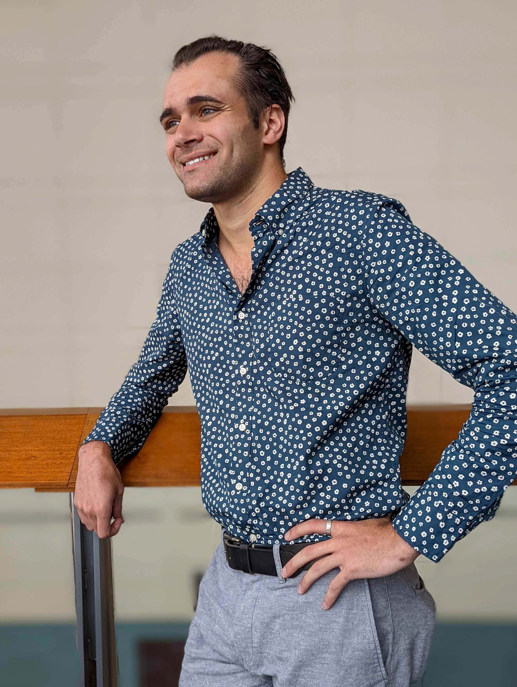

{% capture focused %}
    {% include focused.md %}
{% endcapture %}

{% capture detailed %}
    {% include detailed.md %}
{% endcapture %}

{% assign pubcount = site.data.pubs | where: "type", "conference" | size | plus: 1 %}

<div class="container">
    <div id="title" class="row">Vincent Pacelli</div>
    <div class="row">
        <div class="col-lg-4">
            <br/>
            
        </div>
        <div class="col-lg-8">
            <br/>
            <div class="row">
                <div class="col-lg-10">
                    <div class="d-flex flex-column align-self-end focused">
                        <div class="mx-2">
                            {{ focused | markdownify }}
                        </div>
                    </div>
                </div>
                <div class="col-lg-2 links text-left">
                    <a href="mailto:vpacelli@princeton.edu">email</a>
                    <br/>
                    <br/>
                    <a href="">curiculum vitæ</a>
                    <br/>
                    <br/>
                    <a href="#publist">pub list</a>
                    <br/>
                    <br/>
                    <a href="https://scholar.google.com/citations?user=M7Vsg3IAAAAJ&hl=en&authuser=1&oi=ao">scholar</a>
                    <br/>
                    <br/>
                    <a href="https://orcid.org/0000-0002-3757-7538">orcid</a>
                </div>
            </div>
        </div>
    </div>
    <br/>
    <div class="row main-text">
        <div class="col-lg-9">
        {{ detailed | markdownify}}
        </div>
        <div class="col-lg-3">
            <!--  -->
        </div>
    </div>
    <br/>
    <div class="row main-text border border-dark">
        <div class="col-lg-12">
            <h1 id="publist">Publications</h1>
            <ol class="publist">
                {% include publist.html type="conference" %}
            </ol>

            <h1>Talks</h1>
            <ol class="publist" start="{{ pubcount }}">
                {% include publist.html type="talk" %}
            </ol>
        </div>
    </div>
    </br>
</div>